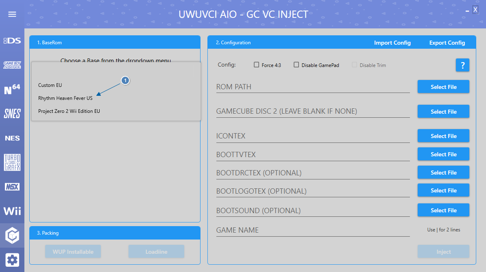
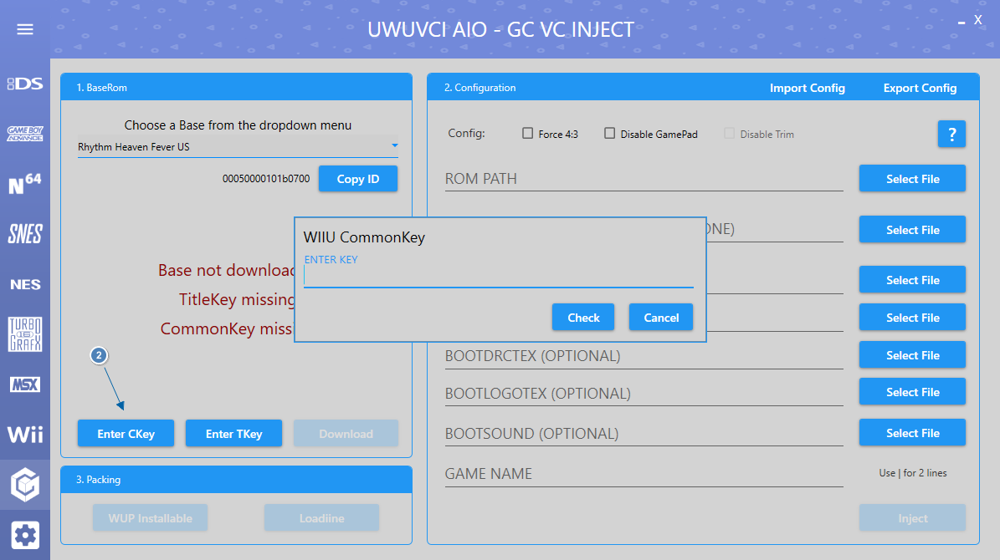
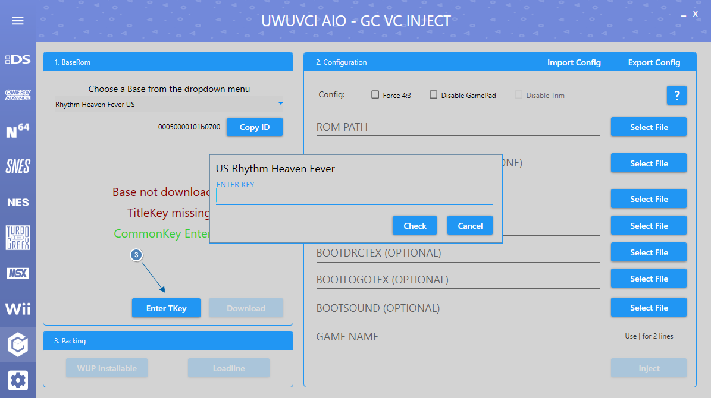
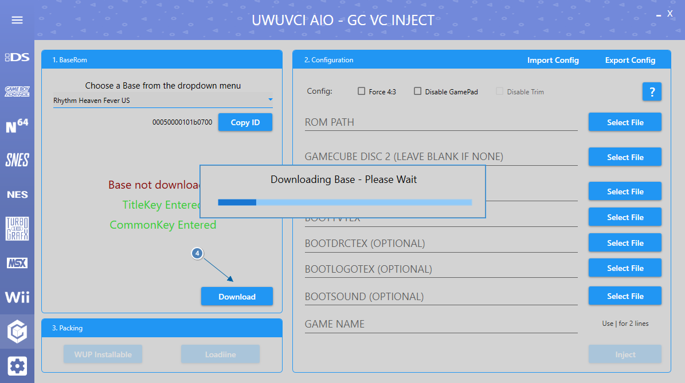
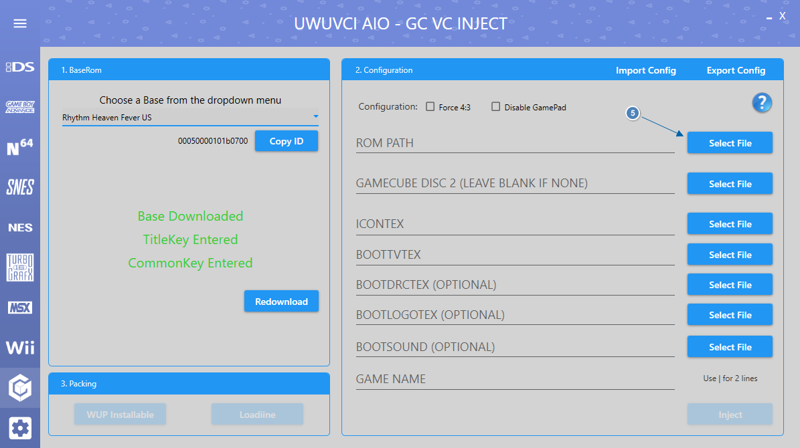
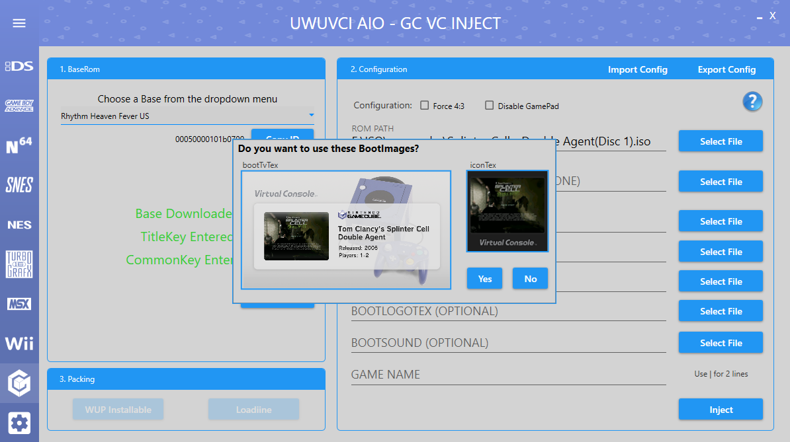
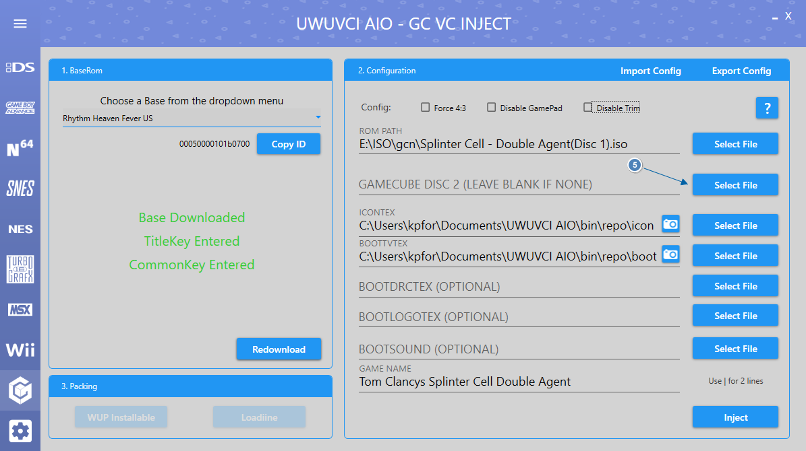
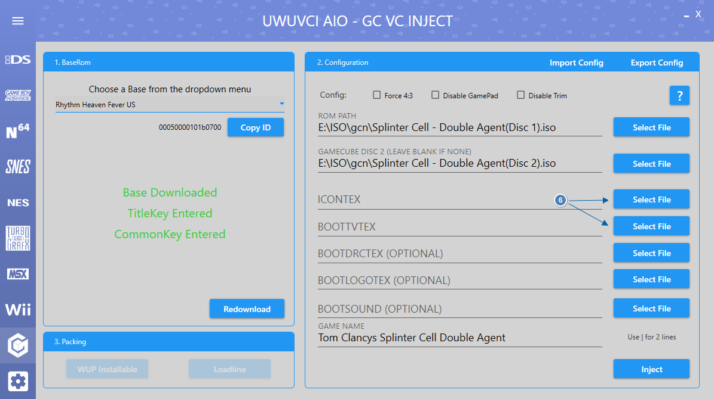

Here is a quick guide to help you get started using UWUVCI.
Choose a base from the dropdown box.

If this is your first inject enter the WiiU common Key. (Google it).

Enter the Title Key for the base you selected. (Google it).

Click Download and wait for the Base to finish downloading.

Select File next to Rom path and choose the Gamecube ISO/GCM that you want to inject.

If there are premade images on our server for the Inject then you will be offered to download them.

If there is a second disk for the Inject then select it now.

If no images were found on the server in the above step or you wish to add your own custom images then you can do so now.
If no images are selected then it will use the fallback images made for the UWUVCI injector.
The resolutions of the images are 128x128 for ICONTEX and 1280x720 for BOOTTVTEX.
